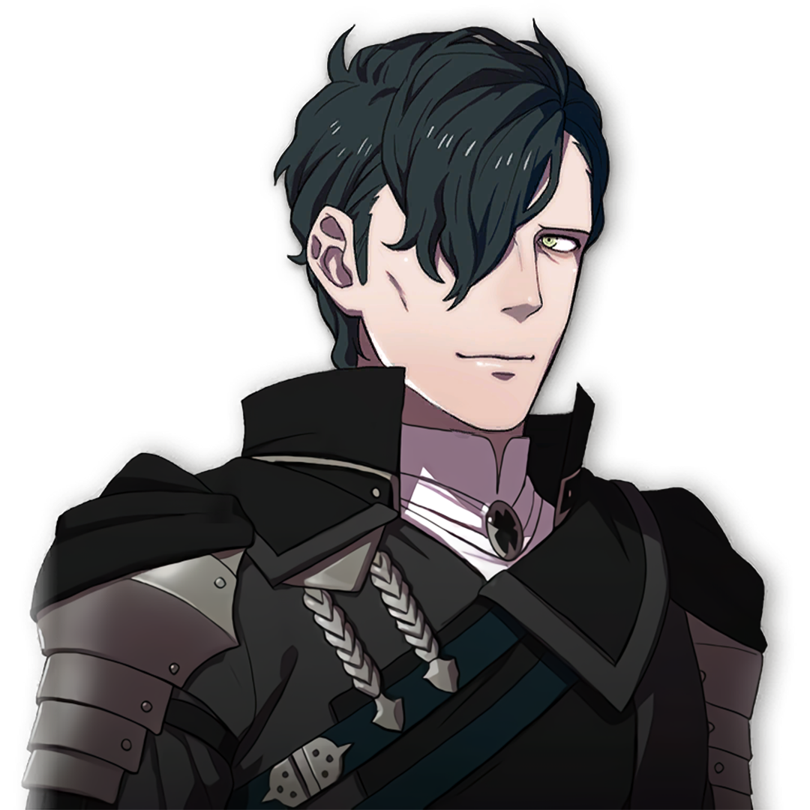

Hubert


Gender: M
Age: 20
Crest: None
Height (cm): 188
Nationality: Adrestian Empire
Birthday: 4/17 - Great Tree Moon
Interests: Strategy and tactics research, Protecting Edelgard,
Likes: Irony, coffee, intelligence, useful people
Dislikes: The Church of Seiros, those who bother Edelgard, gambling, heights, nostalgia, laziness
Status: Heir to House Vestra, servant to the Imperial Princess